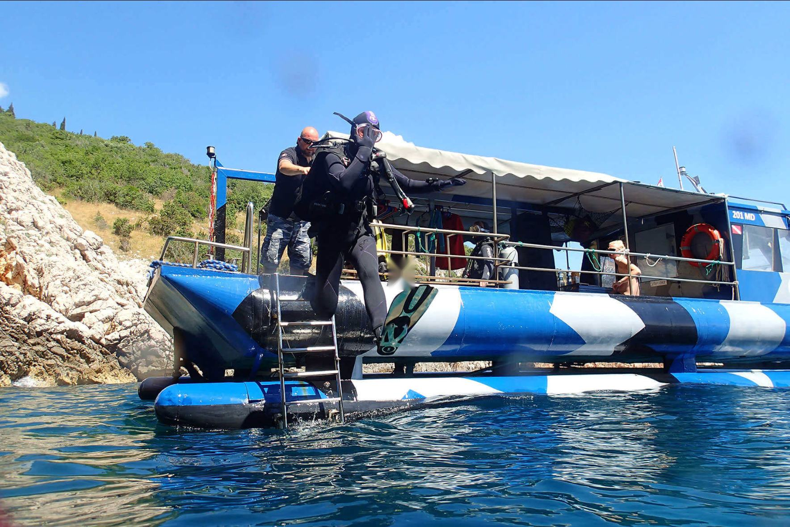
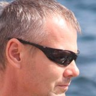
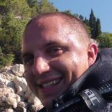
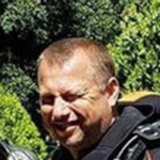
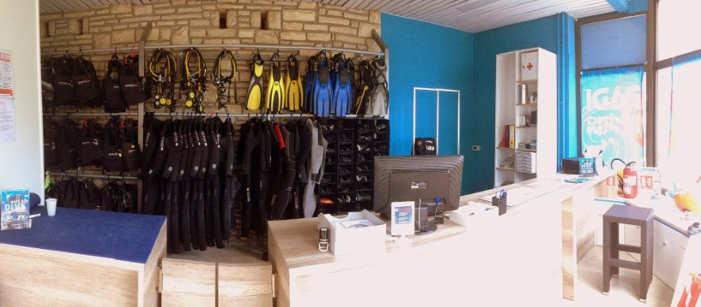
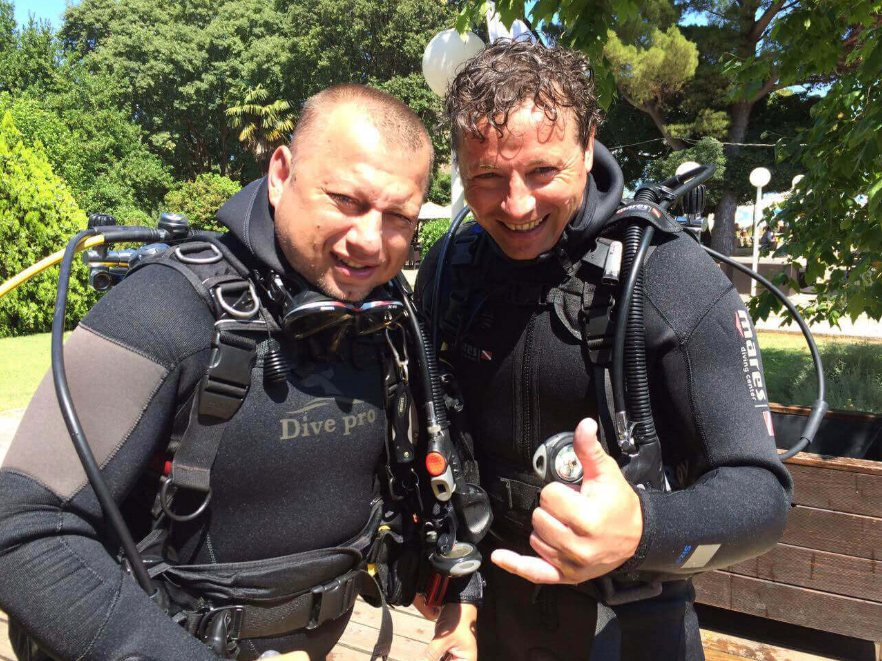

Wreck Lina
Excellent visibility and no current. A deep wreck and wall dive, about 1 h 20 min out by boat.
Book a wreck dive
Dive center · Mošćenička Draga, Kvarner bay
Boat and shore dives on more than 16 sites in Kvarner bay, wreck dives including Lina and Vis, and SSI, PADI and CMAS courses from your very first try dive.
Aleja Slatina 2, 51417 Mošćenička DragaBoat dives, shore dives and wrecks around Mošćenička Draga.
Dive the Kvarner
Move to look around01The team and the bay
Roby and the crew have run Marine Sport since 2000, right on the seafront by Hotel Marina in Mošćenička Draga, on the Opatija riviera.
Boat dives with Goran at the helm, shore dives straight from the beach, and more than 16 dive sites across Kvarner bay. Roby, Edo and Bojana teach and guide mixed groups of all ages and levels in several languages, with a calm, safety-first way of doing things.
Great visibility and usually warm water. Colourful nudibranchs and yellow sponges on the shore dives, red coral walls by boat, and the wrecks Lina and Vis for advanced and technical divers.
At the center: a wet room with showers, a compressor room, a small workshop for repairs and a shaded corner to log dives or study theory. Rental equipment is serviced regularly and renewed every year. Come as a guest, leave as a friend.

Roby · owner, instructor
Goran · captain, divemaster
Edo · instructor
02Dive programs
From a first breath underwater to deep wrecks. Prices in euro, per person.
Never dived before? A short briefing, a calm shallow dive with an instructor right beside you, and the bay from a completely new angle.
Boat dives and shore dives on more than 16 sites in Kvarner bay. Mixed groups of all levels are welcome, and the team picks the site to match the day.

From your first certification to advanced levels, with the federation you prefer. Theory, pool or shallow water, then open water dives in the bay.
Wreck dives including Lina and Vis, by boat, for certified divers with the right level. Ask the team which wreck suits your experience.
2026 season, in euro. Group discounts for 10 or more people.
Prices in euro, valid from 1 April to 31 December 2026. Air fills and weights are free. Payment in cash at the center.
03Dive sites
Walls, red corals, reefs and two deep wrecks, by boat or straight from the shore.
Excellent visibility and no current. A deep wreck and wall dive, about 1 h 20 min out by boat.
Book a wreck diveA deep wreck for technical divers, about 1 h 15 min out by boat. No current, good visibility.
Book a wreck diveWalls covered in red corals, 40 to 45 min out by boat.
Book a fun diveBeach, wall, labyrinth and reef dives, from 200 m to a 15 min walk from the center. Colourful nudibranchs and yellow sponges, good for try dives and relaxed fun dives.
Book a fun diveWalls from 5 to 50 m, 15 to 50 min out by boat. The team picks the site to match the day, the wind and your level.
Ask on WhatsAppLow or no current and good visibility on every site. Boat times are from the center.
04Your dive day
Aleja Slatina 2, on the seafront by Hotel Marina. Paperwork, the medical statement, your certification card if you have one, and a chat about the plan for the day.
Your own equipment or rental from the center, checked together. The site, the depth and the signals are explained before anyone gets wet.
Goran takes the boat out to the site, with refreshments, first aid and oxygen on board. Or the group walks in from the shore, the gear goes over on a trolley.
Clear water, usually warm. Back at the center you fill in the logbook and plan the next one.
05Practical
The small things that make the day easy.
06Booking
Pick a program, a date and how many of you. We confirm on WhatsApp or by email. No online payment, you pay in cash at the center.
Dive flag up
Equipment serviced and renewed every year, oxygen and first aid on board, careful briefings and a team used to mixed groups of all ages and levels. If the sea is not right, we reschedule.
Ask a question07FAQ
Anything else, write to us on WhatsApp.
10 years. Children can also come along on the boat if there is space, with an adult keeping an eye on them.
Everyone fills in a medical statement before a course or a try dive. If you answer YES to any question, a dive doctor has to examine you and sign it, dated within the last 6 months.
We reschedule. If the sea or the wind is not right for a safe dive, we find another day or time with you.
With a try dive. An instructor stays with you the whole time, and if you like it, a course is the next step.
Yes. Complete equipment is 30 € a day, single items from 8 €, with 5 mm Mares wetsuits in all sizes. Tell us your sizes when you book.
We cannot book rooms, but the center sits on the seafront of Hotel Marina, a few metres from Hotel Mediteran. Pension Buba and Autocamp Draga are close by too.
In cash at the center. Card payment is not available for now.
Yes. Let us know one day before your dive. The Nitrox fill is 6 € on top of the dive price.
At least 2 to 3 full days. Less if you finish the theory before you arrive with SSI Digital eLearning. Holders of PADI Open Water can continue with SSI Advanced.
Yes, if there is space, to snorkel or swim, for 25 €. The boat can also be booked privately for diving, snorkelling or a day out. Call or email us.
Usually yes. We can check SSI and PADI certifications online. Without any proof we cannot take you diving.
We will pair you with a suitable buddy. If your last dive was more than 2 years ago, we recommend a short dive check or a Scuba Skills Update.
Yes, for groups of 10 or more people. Write to us with your dates.
08Contact
Marine Sport Dive Center
Aleja Slatina 2
51417 Mošćenička Draga, Croatia
Opatija riviera, Kvarner bay. Daily from 09:00 to 19:00.

Nedavno sam se preselila u Rijeku i ovdje gradim lokalni portfolio. Dizajnom se bavim 19 godina, za banke, prometne sustave i svoje aplikacije, pa su ovo uvodne cijene za prve klijente na Kvarneru, a ne cijene početnice. Porast će kad se portfolio popuni.
Zašto vam pišem prva? Radije pokažem nego obećam, pa sam stranicu napravila unaprijed, bez ikakve obveze. Ako vam ne treba, samo recite i neću vam se više javljati.
Želite prvo porazgovarati? Besplatan poziv od 15 minuta na WhatsAppu ili Zoomu, bez obveze.
50 % na početku, 50 % kad je stranica online. Račun izdaje moj registrirani obrt.
Želim ovu stranicu ↗